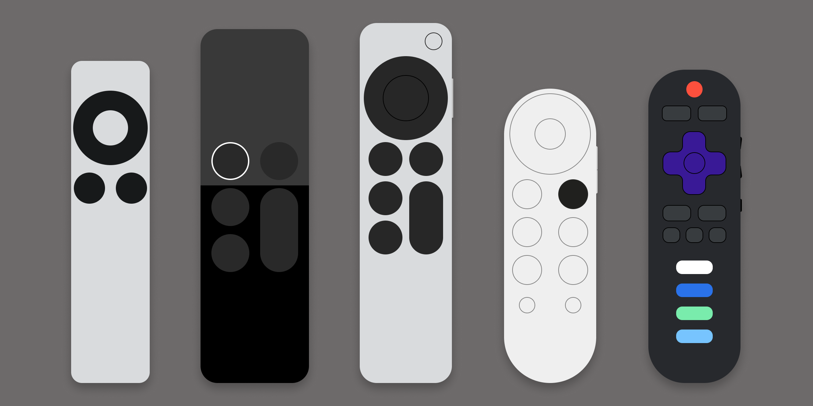

Smart TV Remotes
According to a 2023 study by Hub Research, 74% of TV households have a smart TV. Statista says there are 125 million TV households in the United stats. That means that nearly 93 million American homes have smart TVs. That’s a lot of smart TVs. It’s safe to say that the smart TV has kind of become an integral part of the modern American home. And I think the en masse move to the smart TV makes a lot of sense. As we’ve seen the move from cable to streaming, so too have we seen the rise of streaming boxes like Roku, Apple TV, Amazon Fire Stick, and Google Chromecast. The next logical step, of course, was to just integrate those boxes into the TVs themselves. And that’s when we saw an interesting shift from the traditional television remote to the smart TV remotes of today.

Each of these remotes has a unique layout and feature set. This can be a little frustrating for people that have a blend of ecosystems in their house. I, for example, have a Roku TV in my living room, an Apple TV in my home theater, and a Google TV in my bedroom. All of the remotes in my house have some features I like and some features I don’t. Let’s start with what what I’ve noticed I don’t like.
IR Transmission
I think my number one frustration with using TV remotes is aiming it at the TV. It’s 2024. We need to move past IR as a method of wireless data transmission. My Epson projector uses IR, but it seems to have an unusually good receiver. It’s somehow able to pick up my inputs when the remote is pointed completely away from the projector. Is it using a camera to see the light bounce off the wall and ceiling? Couldn’t tell you. It’s neat though.
Static Dedicated Shortcut Buttons
This one drives me crazy. My Roku remote has 4 dedicated shortcut buttons that have the name of the shortcut printed on the button. My Roku remote has permanent dedicated buttons for Netflix, Sling, Hulu, and Starz. Not only do I not have a Sling or Starz account (and no desire to get them), but I also accidentally press the buttons and it takes me out of my current app and drops me in the Roku channel store, asking me if I want to install the Starz app. Infuriating.
Lack of Integration with Third Party Hardware
My wife hates that we have a “TV remote” and a “volume remote.” Our remote has volume buttons on it, but you can’t program it to send to communicate with our stereo amplifier. And of course our stereo amp is too old to support HDMI CEC (Consumer Electronics Control) so the TV can’t send a volume up or down signal to the amp. It’s a mess.
Disposable Batteries
TV remotes are some of the last devices in my house that take AA or AAA batteries. As a result, I almost never have any backups in the house. So when a remote runs out of battery, I have to drive to the store to get more (which usually means no TV that day).
Designing a Better Remote
So what features do we want? I think the obvious place to start is by smoothing out those pain points.
- Radio transmission
- No shortcut buttons (or at least customizable)
- IR backup for stereo amps
- USB-C rechargeable battery
The astute among you may realize that I’ve basically just described the latest Apple TV remote. We’ll get to that. But I think this is a good place to start. Now let’s talk ergonomics.
A good remote feels good in the hand. This is actually where I think the Apple TV remote falls flat. The squared off edges and flat back just don’t feel good to hold. Another component of good ergonomics is the size. When Steve Jobs designed the original iPhone, one of his key requirements was that a user should be able to reach all four corners of the display with their thumb while holding it in the natural position. All of my smart TV remotes do this, but some just feel better than others. After some testing, I can confidently say that this is due to two things: having a substantial mass in the palm and having a rounded back. The Google TV remote is too short, but has a comfy profile. The Apple TV remote feels hefty in the hand, but it’s squared edges are a little fatiguing.